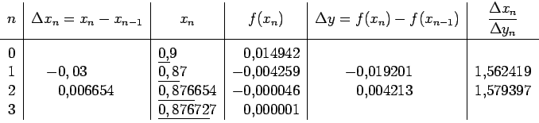

Inhalt Index DeskTop Bronstein

 Numerische Mathematik Numerische Lösung nichtlinearer Gleichungen Iterationsverfahren
Numerische Mathematik Numerische Lösung nichtlinearer Gleichungen Iterationsverfahren


d.h., sie benutzt nur Funktionswerte und geht aus dem NEWTON-Verfahren (19.6) dadurch hervor, daß die Ableitung f'(xn) durch den Differenzenquotienten von f(x) zwischen xn und einem vorhergehenden Näherungswert  ersetzt wird.
ersetzt wird.
Die Grundidee der Regula falsi besteht in der lokalen Approximation der Kurve y = f(x) durch eine Sekante.
| Beispiel |
|
|
Falls sich im Verlaufe der Rechnung die Werte nur noch unwesentlich ändern, kann auf ihre Neuberechnung verzichtet werden.
| Beispiel |
|
Zur Lösung der Gleichung mit Hilfe des STEFFENSEN-Verfahrens soll die Gleichung benutzt werden. 
|